Skydio Gulf Coast
Deployment Hub
Airport-integrated Drone-as-First-Responder + Infrastructure Response for Louisiana & Gulf Coast
Permanent Skydio
Regional Deployment
Hub — Lafayette.
First Gulf Coast airport-based autonomous drone deployment hub located at Lafayette Regional Airport (KLFT), providing rapid aerial response, infrastructure protection, and regional emergency support.
The Window
Is Open.
Rapid growth in public safety drone programs nationwide. Agencies shifting toward autonomous deployment models. Demand for regional deployment infrastructure increasing.
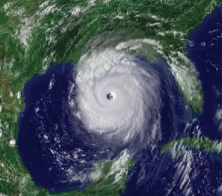
Regional Drone
Command Center.
Airport-based drone operations hub with centralized fleet staging, rapid deployment capability, regional coverage, and an autonomous dock network — built on existing aviation infrastructure.
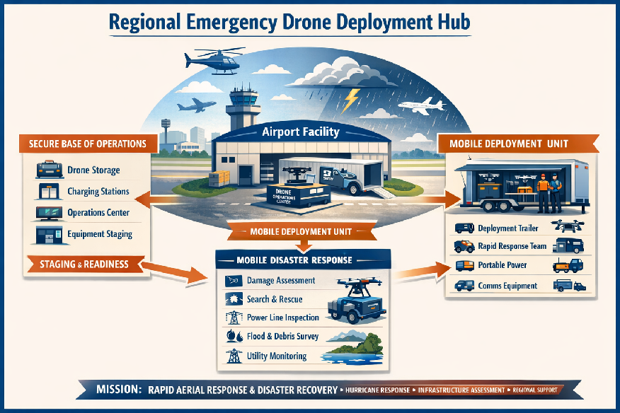
Built for This.
Done It Before.
Led ROV adoption in late-90s offshore operations — won over skeptical stakeholders by explaining and delivering results. Bridges the "AI doesn't make sense yet" gap for agencies with simple explanations and practical demos.
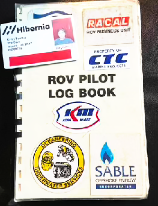
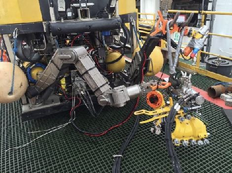
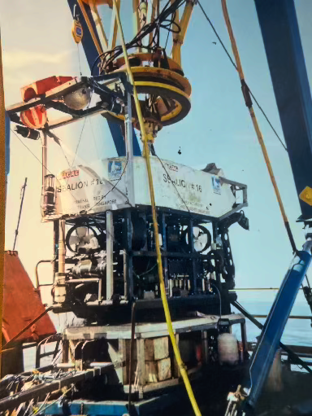
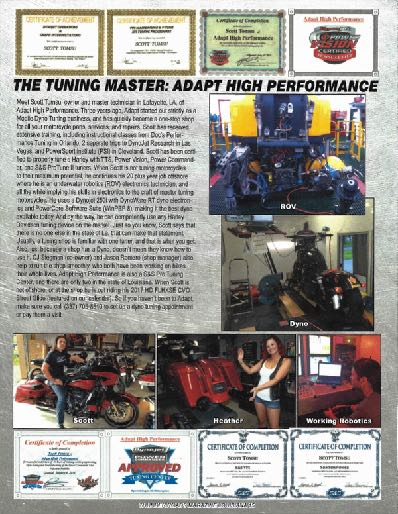
One Operator.
Multiple Autonomous
Assets. 24/7.
24/7 monitoring, dispatch workflow, emergency deployment, coordination with agencies, and data delivery pipeline — all managed by one operator running multiple autonomous assets simultaneously.
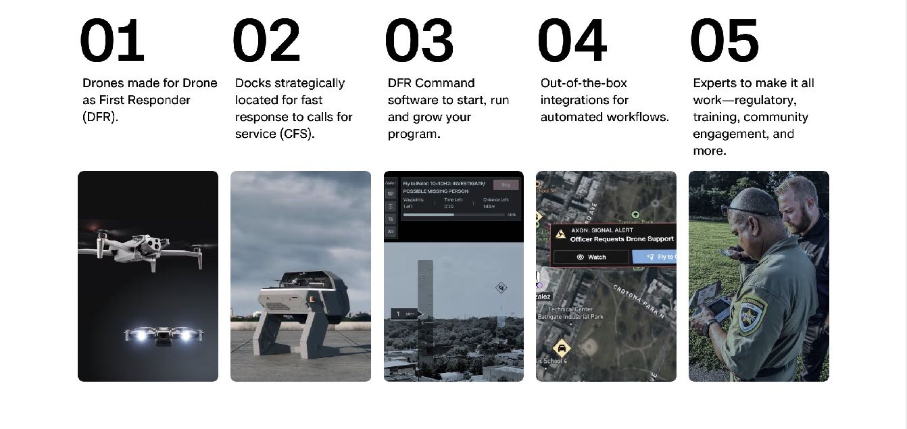
Response Within
Minutes.
Not Hours.
Regional response capability deployed within minutes of a hurricane impact or major infrastructure failure — not hours. Faster situational awareness, reduced risk to personnel.

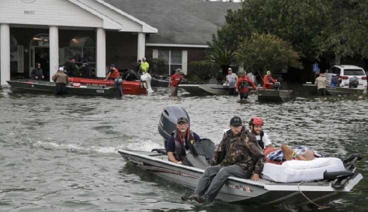
Public Safety.
Infrastructure.
Emergency Response.
Three mission pillars — all served from a single deployment hub at KLFT Lafayette Regional Airport.
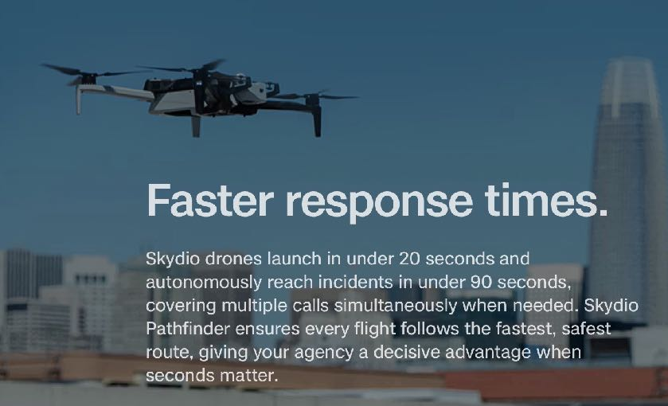
A Family of
Flying Robots
Working Together.
Skydio drones, control center, communications links, data processing, weather hardening, power redundancy, and BVLOS readiness — all on one common platform.
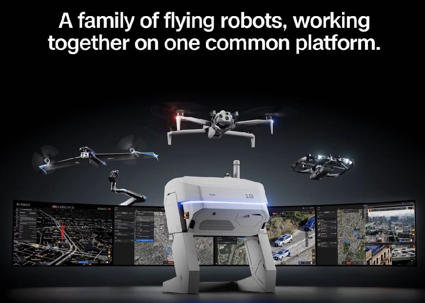
Central Position.
Maximum Reach.
24/7 Aviation Access.
Central Gulf Coast position — direct access to I-10/I-49. Rapid reach to Baton Rouge, New Orleans, and Lake Charles. Heart of the energy, pipeline, and hurricane response region.
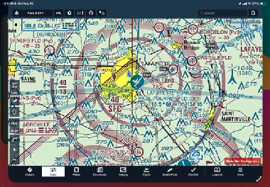
Built for Aviation.
Ready for
Autonomous Ops.
The former PHI aviation hangar sits directly on the KLFT apron — large clear-span structure, offices, fire suppression, and industrial utilities already in place. No major renovation. We drop in and deploy.
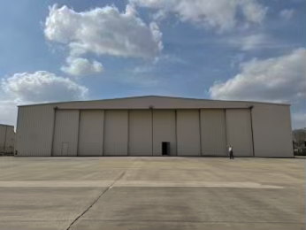
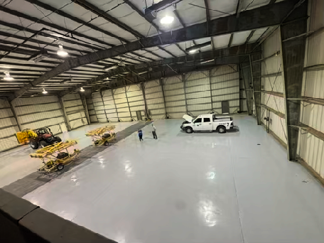
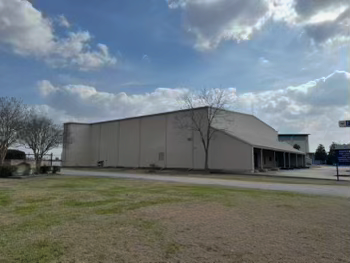
The Building Is
Right Here.
On the Apron.
The FAA airport diagram confirms the site location. The former PHI hangar sits on the south apron — direct runway access, secure perimeter, and immediate airfield integration for drone operations.
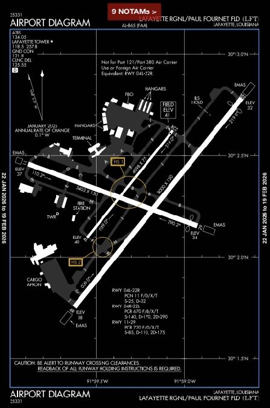
One Hub.
Entire Gulf Coast
Covered.
Service radius map — Gulf Coast reach. Response time improvements. Statewide deployment capability from a single hub at KLFT Lafayette Regional Airport.
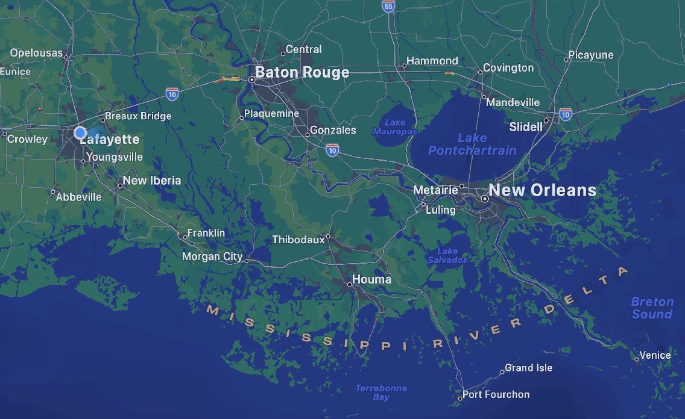
Lafayette Has Always
Been an Aviation and
Energy Operations Hub.
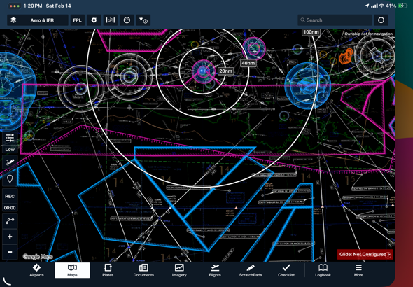
Extremely Large.
Secure. Built for
Serious Aviation.
The existing hangar gives us a huge head start. It's extremely large, secure, and built for serious aviation operations. No major rebuild required — we can move fast using what already exists.
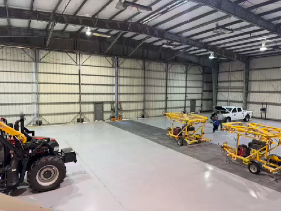
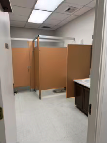
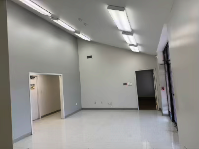
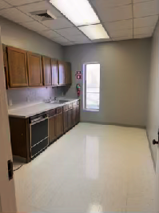
Incident to Agency.
Autonomous.
Real-Time.
Public/private partnership — contracted services model — regional support service. Coordination with police, fire, and emergency management. Designed to match public-safety purchasing realities: NDAA-compliant platforms + grant-friendly structure.
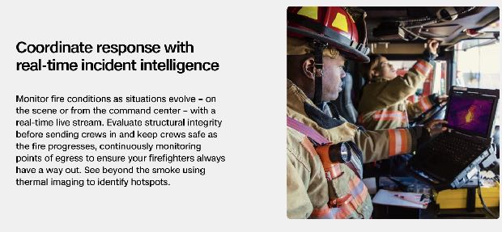
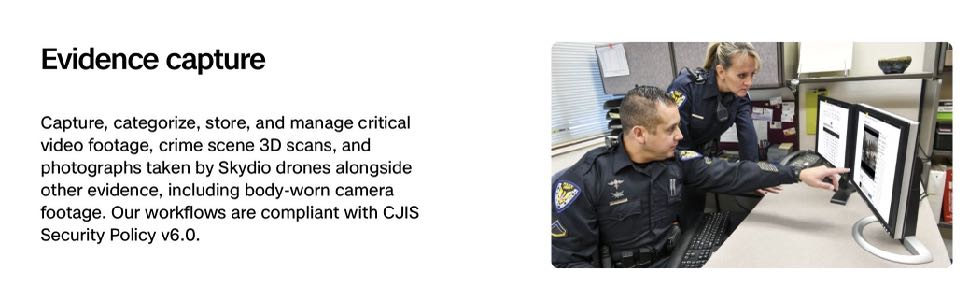
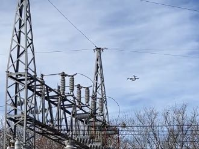
Asset Inspection. Site Security. Surveying & Mapping.
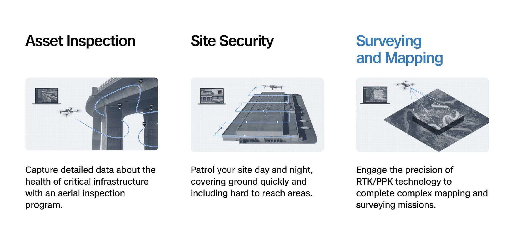
Facility. Capability.
Autonomous Network.
Regional Expansion.
Structured phased deployment — from initial facility setup through full autonomous network and regional expansion across the Gulf Coast.
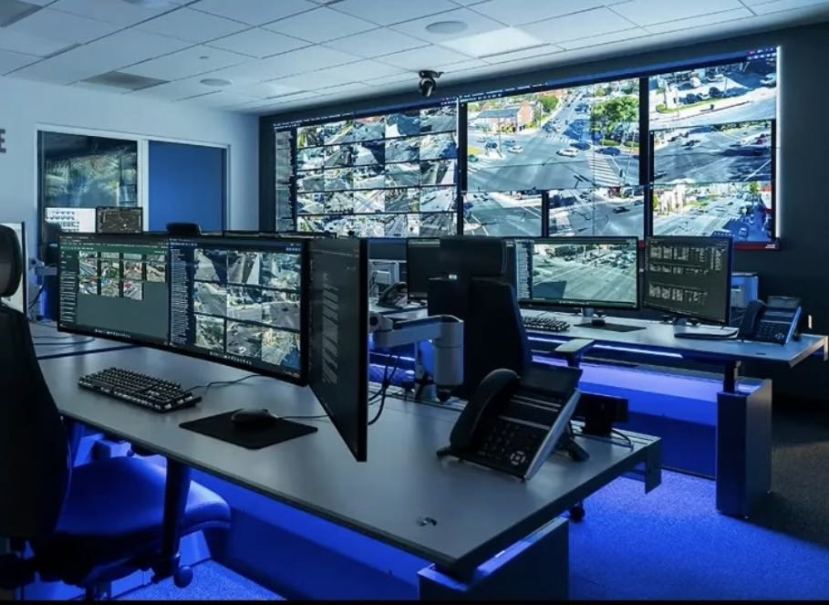
Federal. State. Grant.
Multiple Aligned
Funding Streams.
This deployment sits at the intersection of four major federal funding streams — each independently aligned with our mission. This is not grant-hunting; these programs were designed for exactly this type of deployment.
State, Federal,
Airport, Technology,
Infrastructure.
A complete ecosystem of partners — from state and federal agencies to airport authority, technology vendors, utilities, and research institutions.
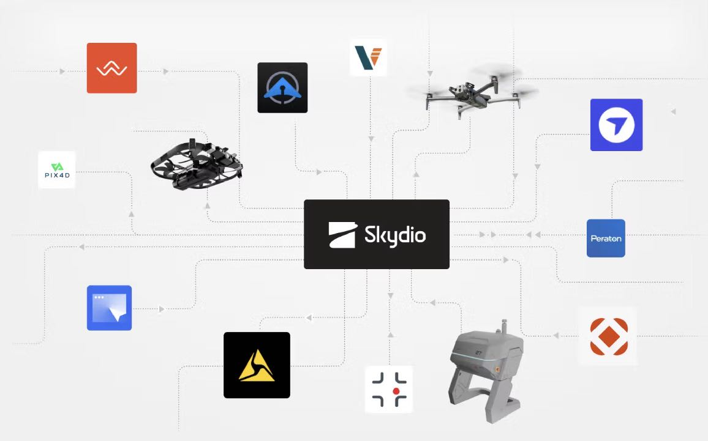
Technology Partner.
Deployment Collaboration.
Gulf Coast Together.
Skydio technology partner — deployment collaboration — equipment integration — regional demonstration site — training and customer engagement location. BVLOS-ready as FAA frameworks evolve.
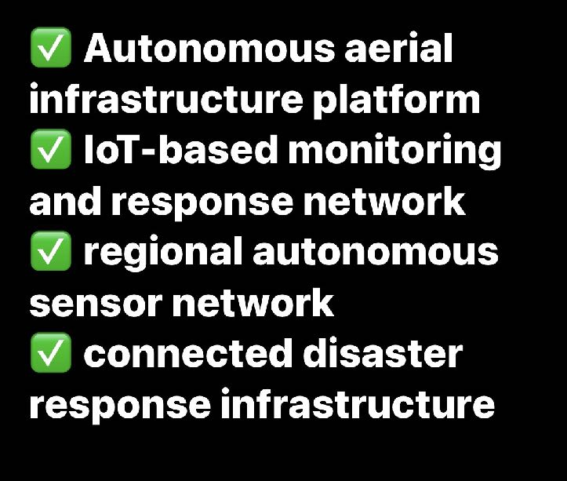
Regional Disaster
Response Hub.
Gulf Coast Model.
A long-term vision: regional disaster response hub — autonomous aerial deployment network — public safety support platform — infrastructure monitoring capability — Gulf Coast operational model.
My Home Airport.
My Career.
All In.
Visit. Meet.
Define. Plan.
Build Together.
Four simple next steps to move from proposal to deployment — visit the facility, meet local stakeholders, define how a Lafayette deployment works, and plan the pilot program.
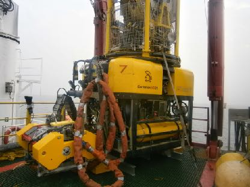
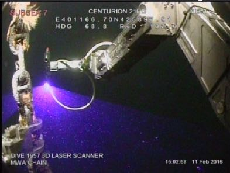
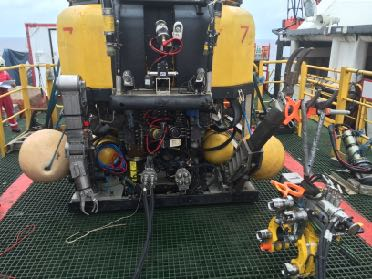
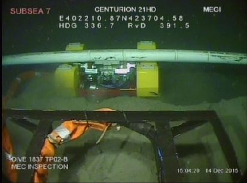